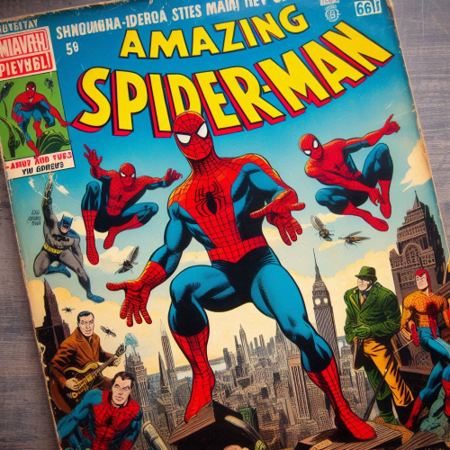
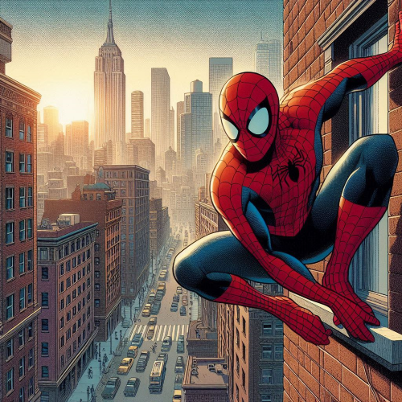

Actualidad en línea
Spiderman

HISTORIA DE SPIDERMAN
1. Creación y Orígenes (1962)
Debut: Spider-Man hizo su primera aparición en Amazing Fantasy #15 en agosto de 1962. Fue creado por Stan Lee y Steve Ditko.
Orígenes: Peter Parker, un adolescente tímido y estudiante de secundaria, es mordido por una araña radiactiva. La picadura le concede superpoderes como la agilidad y fuerza sobrehumana, y la habilidad de trepar paredes. Tras la muerte de su tío Ben, Peter adopta el nombre de Spider-Man y usa sus poderes para combatir el crimen, recordando siempre el lema: "Un gran poder conlleva una gran responsabilidad."
2. La Edad de Plata (1960s-1970s)
Desarrollo del Personaje: Durante esta década, Spider-Man se convirtió en un símbolo de los problemas adolescentes y las dificultades cotidianas. Las historias abordaron temas como la vida escolar, las responsabilidades de un héroe y las complejas relaciones personales de Peter Parker.
Rivalidades y Villanos: Spider-Man se enfrentó a enemigos icónicos como el Duende Verde, Doctor Octopus y el Hombre de Arena. También se introdujo su primer gran equipo de villanos, los Seis Siniestros.
3. La Edad de Bronce (1970s-1980s)
Épicas Historias: Esta era trajo algunas de las historias más memorables del personaje. La saga de The Night Gwen Stacy Died (1973) en The Amazing Spider-Man #121-122 es una de las más impactantes, en la que Gwen Stacy, el interés amoroso de Peter, muere a manos del Duende Verde.
Crisis de Identidad: Spider-Man también experimentó crisis personales y profesionales, como en la saga del "Clon" (1994), donde se revela que Peter podría no ser el verdadero Spider-Man, sino un clon.
4. La Edad Moderna (1980s-presente)
Resurgimiento y Modernización: Spider-Man continuó evolucionando con historias más modernas y complejas. La saga Ultimate Spider-Man (2000) reinició el origen de Peter Parker en un universo paralelo, atrayendo a una nueva generación de fans.
Eventos Importantes: En la década de 2000, Spider-Man fue parte de grandes eventos crossover como Civil War (2006-2007), donde se enfrentó al Capitán América debido a su apoyo al Registro de Superhéroes.
Películas y Medios: La trilogía de Spider-Man dirigida por Sam Raimi, protagonizada por Tobey Maguire, debutó en 2002, marcando un hito en las películas de superhéroes. Posteriormente, The Amazing Spider-Man (2012) con Andrew Garfield y Spider-Man: Homecoming (2017) con Tom Holland expandieron su presencia en el Universo Cinematográfico de Marvel.
El Multiverso en los Cómics
En el universo de los cómics, especialmente en el de Marvel y DC, el multiverso es una idea que explora la existencia de múltiples universos paralelos o realidades alternas. Cada uno de estos universos puede tener versiones diferentes de personajes conocidos o historias que se desarrollan de manera distinta.
Marvel Comics: En el multiverso de Marvel, hay una infinidad de universos paralelos. Uno de los más conocidos es el Universo Ultimate (Tierra-1610), donde hay versiones alternativas de los personajes clásicos como Spider-Man (Miles Morales). Otro ejemplo prominente es la saga de Spider-Verse, donde Spider-Man de diferentes universos (como Spider-Gwen y Spider-Man 2099) se unen.
DC Comics: DC también ha explorado el multiverso extensamente. Uno de los eventos más icónicos es Crisis en Tierras Infinitas (1985-1986), donde se consolidaron diferentes universos paralelos en uno solo para simplificar la continuidad. Más recientemente, en Crisis en las Tierras Infinitas (2020-2021), el multiverso volvió a jugar un papel importante.
Heroe de la Semana

Spiderman es el Héroe de la Semana por su valentía inquebrantable y su dedicación a proteger la ciudad. A pesar de enfrentar pérdidas personales y desafíos implacables, Peter Parker sigue siendo un símbolo de esperanza y responsabilidad. Su habilidad para superar adversidades y su inquebrantable moral lo convierten en un héroe ejemplar que inspira a todos a seguir luchando por el bien.